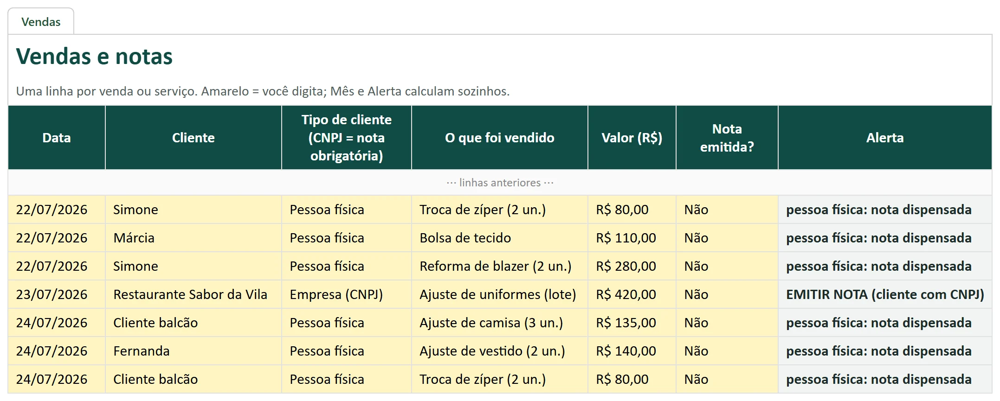
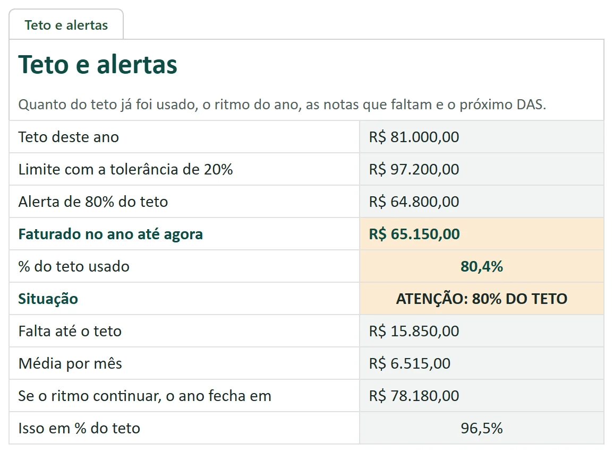
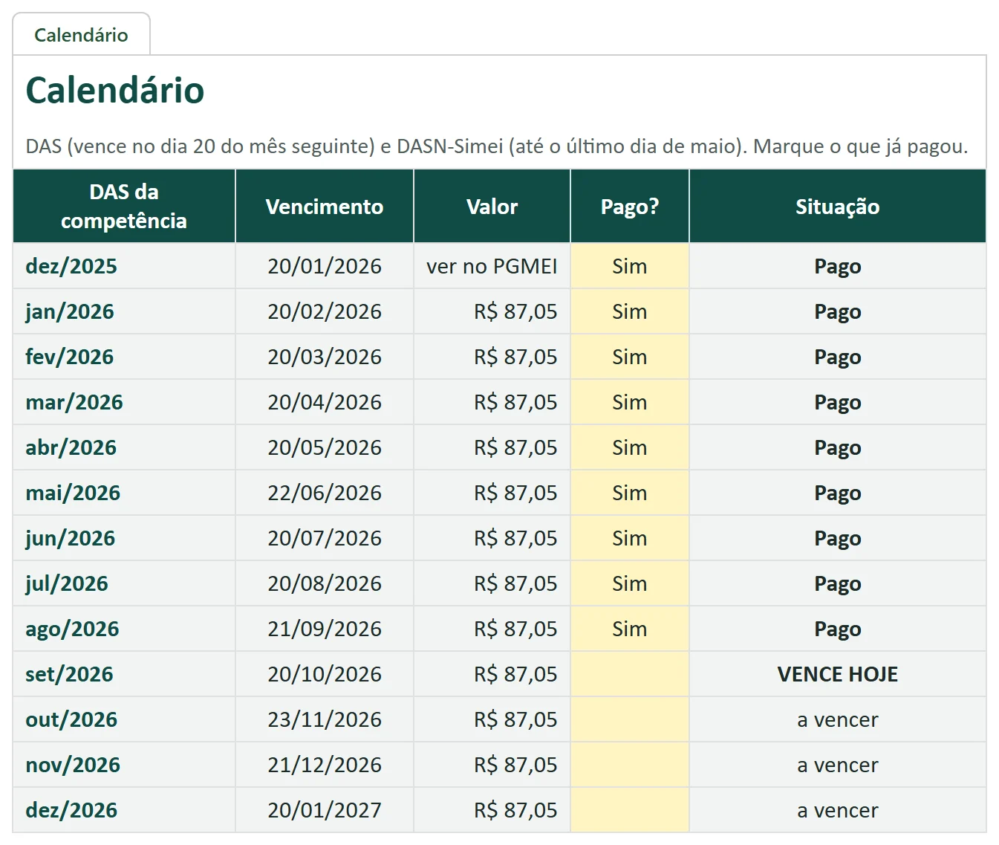

MEI em Dia 2027
MEI 2027: o que mudou e a planilha que já faz a conta
O teto sobe para R$ 110 mil, a nota segue obrigatória para cliente com CNPJ e o INSS do DAS em atraso pode ser perdoado, com condições e regras ainda por regulamentar. Você anota cada venda; a planilha avisa quando emitir nota e quanto do teto já foi usado. Guia de 32 páginas com o artigo da lei em cada regra.
Quero o meu por R$ 27Guia de 32 páginas + planilha + exemplo + 2 vídeo-aulas · acesso na hora · garantia de 7 dias
No exemplo · você anota a venda
- Data
- 23/07/2026
- Cliente
- Restaurante Sabor da Vila
- Tipo
- Empresa (CNPJ)
- Valor
- R$ 420,00
- Nota emitida?
- Não
A planilha mostra
EMITIR NOTA (cliente com CNPJ)
- Faturado no ano
- R$ 65.150,00
- Teto usado (R$ 81 mil em 2026)
- 80,4%
- Situação
- ATENÇÃO: 80% DO TETO
- Falta até o teto
- R$ 15.850,00
Reprodução dos valores calculados pela planilha de exemplo (MEI fictícia, 534 vendas em 2026); não é captura de tela.
Veja a planilha por dentro
O registro de vendas avisa a venda para empresa que ficou sem nota, o teto mostra quanto já foi usado e o calendário diz o que já foi pago e o que vence.



Reprodução em imagem dos valores calculados pela planilha de exemplo (MEI fictícia, 534 vendas em 2026); não é captura de tela. A planilha funciona no Excel, no Google Planilhas e no celular.
O que mudou em outubro de 2026
- Teto maior. A Lei Complementar 238/2026, sancionada em 21/10/2026, sobe o limite do MEI para R$ 110 mil em 2027 e R$ 140 mil a partir de 2028. Em 2026 continua R$ 81 mil.
- Nota fiscal. Para cliente com CNPJ, a nota continua obrigatória. Para pessoa física sem CNPJ, a partir de 2027 a declaração anual (DASN-Simei) pode valer como documento fiscal dessas vendas (Resolução CGSN 195/2026, publicada em 22/10/2026). O que passa a pesar é o registro de vendas.
- Dívidas. A mesma lei perdoa a contribuição do INSS do DAS devida até 13/10/2026, com juros e multas, com contrapartidas. ICMS e ISS não entram, e a forma de pedir ainda depende de ato da PGFN.
- Até 2 empregados a partir de 1º de janeiro de 2027.
- Reforma tributária no MEI. Pela Lei Complementar 214/2025, a partir de 2027 a CBS e o IBS entram no DAS do MEI em valor fixo, sem cálculo sobre cada venda. O guia mostra onde conferir o valor no PGMEI e como lançar na planilha.
Continuam as obrigações de sempre: o DAS de todo mês, a declaração anual em maio e o teto do ano. O MEI em Dia 2027 explica cada mudança com o artigo da lei e junta tudo numa rotina curta por semana (no exemplo do guia, cerca de 15 minutos).
O que tem dentro
- Planilha MEI em Dia: o registro de vendas, uma linha por venda, com o alerta EMITIR NOTA quando uma venda para cliente com CNPJ fica sem nota. Funciona no Excel, no Google Planilhas e no celular, sem macro.
- Teto com alerta: o teto certo de cada ano (R$ 81 mil, R$ 110 mil ou R$ 140 mil) e quanto já foi usado, com aviso em 80% e em 100%, e o teto proporcional do ano de abertura.
- Calendário: os vencimentos do DAS (dia 20 ou o dia útil seguinte) e da declaração anual, com o que está pago e o que vence.
- Declaração anual: receita total, parte de comércio e parte de serviços, prontas para conferir.
- Planilha de exemplo: dez meses de uma MEI fictícia, com 534 vendas, para ver tudo funcionando.
- Guia em PDF de 32 páginas: o que mudou em 2027, quando a nota é obrigatória e qual emitir (NFS-e nacional ou nota do estado), teto, DAS, declaração, o perdão das dívidas da LC 238 e quando procurar um contador, com a fonte oficial no fim de cada capítulo.
- Checklist para imprimir e a lista do que ainda depende de regulamento, com como conferir.
- Vídeo-aulas: 2 vídeo-aulas de 2 a 3 minutos: o que mudou em 2027 e como usar a planilha, com narração gerada por inteligência artificial (rotulada em cada aula).
É para você se…
- MEI que presta serviço, vende produto ou faz os dois.
- Quem vende pelo balcão, WhatsApp, Instagram ou feira e quer o registro de vendas em ordem para a declaração anual.
- Quem quer saber, toda semana, quanto do teto já usou, o que vence e se tem dívida que entra no perdão.
Não é para você se…
- Quem precisa de contabilidade, abertura de empresa ou emissão de nota feita por outra pessoa: este é um material de estudo e organização.
- Quem procura orientação tributária individual.
- Microempresa fora do MEI.
"Isso não está de graça no gov.br?"
As regras são públicas, e esta página manda você conferir no gov.br. O que o MEI em Dia 2027 faz é juntar a lei de 2027 num guia de 32 páginas e transformar em uma planilha que já calcula o teto, o alerta de nota e o vencimento do DAS. Você paga uma vez e usa o ano de 2027 inteiro: R$ 27 dá cerca de R$ 2,25 por mês.
Como foi feito
Cada regra do guia traz o artigo da lei e o link oficial, conferidos em 27/10/2026. As fórmulas da planilha foram testadas com o exemplo de 534 vendas. Material feito com apoio de inteligência artificial e revisado por pessoa; não substitui o contador.
Antes de comprar: não é contabilidade, não emite nota nem paga o DAS, e não garante evitar multa. Sem vínculo com o governo, a Receita ou o Sebrae. O que vale para o seu caso, confirme com um contador ou no gov.br/mei. Detalhes
Tudo por um pagamento único
Guia de 32 páginas + planilha + exemplo + 2 vídeo-aulas · sem mensalidade
Pix ou cartão · acesso imediato pela área de membros da Kiwify (o link chega no seu e-mail)
100% de volta
Leia por 7 dias. Se não servir, o dinheiro volta inteiro.
Peça o reembolso pela Kiwify ou pelo e-mail lucaszone36@gmail.com, sem precisar explicar. Esse prazo é um direito seu pelo Código de Defesa do Consumidor.
Quero testar sem riscoVende pelo WhatsApp?
Estamos preparando um complemento: catálogo, respostas prontas para preço e prazo, e um jeito simples de anotar cada pedido e saber quem ainda não pagou. Ele ainda não existe e não está à venda. Se isso ajudaria você, toque no botão. Não pedimos nenhum dado seu: só contamos quantas pessoas querem, para decidir se vale fazer.
Anotado, obrigado. Se sair, ele aparece nesta página.
Perguntas frequentes
Como recebo?
Acesso imediato pela área de membros da Kiwify. O link de acesso chega no e-mail informado na compra.
Consigo ler no celular?
Sim. O PDF abre no celular, no tablet e no computador.
Substitui o contador?
Não. O material informa as regras gerais e organiza os seus números. O que vale para o seu caso, confirme com um contador ou nos canais gratuitos: Portal do Empreendedor (gov.br/mei) e Sebrae.
A planilha emite a nota?
Não. Ela não emite nota, não paga o DAS e não entrega a declaração. Ela mostra as vendas para empresa que estão sem nota e calcula com o que você digita.
As regras estão atualizadas?
Sim. Foram conferidas nas fontes oficiais em 27/10/2026, já com a Lei Complementar 238/2026 (teto, empregados e perdão das dívidas) e a Resolução CGSN 195/2026 (declaração anual como documento fiscal da venda a pessoa física). O que ainda depende de regulamento está marcado no guia.
Vou ter que emitir nota para toda venda em 2027?
Não. Para cliente com CNPJ, a nota é obrigatória. Para pessoa física sem CNPJ, a Resolução CGSN 195/2026 diz que a declaração anual pode valer como documento fiscal dessas vendas, a partir de 2027. O guia explica a regra e os pontos que ainda dependem de regulamento.
O que este produto não é?
Não é contabilidade e não substitui o contador. O material informa as regras gerais e organiza os seus números; o que vale para o seu caso, confirme com um contador ou nos canais gratuitos (Portal do Empreendedor, gov.br/mei, e Sebrae). Não emite nota, não paga o DAS e não entrega a declaração. Não garante evitar multa, fiscalização ou desenquadramento. Sem vínculo com o governo, a Receita Federal, o Sebrae nem o Emissor Nacional. Regras conferidas nas fontes oficiais em 27/10/2026, já com a LC 238/2026 e a Resolução CGSN 195/2026; alguns pontos ainda dependem de regulamento, e o guia mostra como conferir.
Garante que não vou levar multa?
Não. O material organiza a rotina, mas não garante evitar multa, fiscalização ou desenquadramento.
E se eu me arrepender?
Você tem 7 dias para pedir 100% do valor de volta, sem justificar, pela Kiwify ou pelo e-mail lucaszone36@gmail.com.